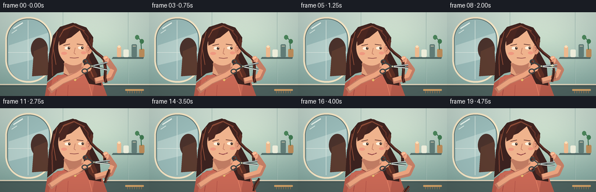
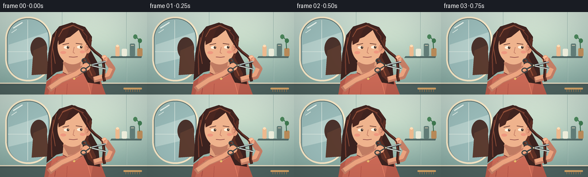

CODING AGENTS AS PIXEL WORLD MODELS
traex/GPT-5.6-Sol · motion_rationality_0036
点击播放 · 原生 RGB 像素
逐轮保存的候选
回放视频、检查图与代码变化。
每份候选均可单独播放。实际图片检查记录在下方工具轨迹中。
候选 01播放与检查图
点击播放 · 原生 RGB 像素


展开代码变化
--- 上一保存版本 +++ 本次保存版本 @@ -0,0 +1,299 @@ +from pathlib import Path +import math +import numpy as np +from PIL import Image, ImageDraw, ImageFilter + +import artifact_io + + +W, H, N = 256, 144, 20 +S = 4 # supersampling for clean illustrated edges + + +def sc(v): + return int(round(v * S)) + + +def box(b): + return tuple(sc(v) for v in b) + + +def pts(p): + return [(sc(x), sc(y)) for x, y in p] + + +def ellipse(d, b, fill, outline=None, width=1): + d.ellipse(box(b), fill=fill, outline=outline, width=sc(width) if outline else 1) + + +def polygon(d, p, fill, outline=None): + d.polygon(pts(p), fill=fill, outline=outline) + + +def line(d, p, fill, width=1, joint="curve"): + d.line(pts(p), fill=fill, width=sc(width), joint=joint) + + +def rounded(d, b, r, fill, outline=None, width=1): + d.rounded_rectangle(box(b), radius=sc(r), fill=fill, outline=outline, + width=sc(width) if outline else 1) + + +def ease(x): + x = max(0.0, min(1.0, x)) + return x * x * (3 - 2 * x) + + +def background(frame): + # Soft sage bathroom gradient with a warm pool of light on the subject. + yy, xx = np.mgrid[0:H*S, 0:W*S] + y = yy / S + x = xx / S + top = np.array([194, 211, 202], dtype=float) + bottom = np.array([122, 158, 151], dtype=float) + mix = (y / H)[..., None] + arr = top * (1 - mix) + bottom * mix + glow = np.exp(-(((x - 164) / 82) ** 2 + ((y - 49) / 57) ** 2))[..., None] + arr += glow * np.array([22, 18, 10]) + # Very subtle analog texture; deterministic and stationary. + rng = np.random.default_rng(410) + arr += rng.normal(0, 0.7, (H*S, W*S, 1)) + return Image.fromarray(np.uint8(np.clip(arr, 0, 255)), "RGB") + + +def draw_room(im): + d = ImageDraw.Draw(im) + # Vertical wall seams and a framed arched mirror. + for x in (108, 220): + line(d, [(x, 0), (x, 126)], (126, 158, 151), .55) + line(d, [(x + .8, 0), (x + .8, 126)], (211, 223, 214), .35) + + rounded(d, (9, 8, 89, 121), 39, (72, 94, 95), (239, 225, 194), 3) + rounded(d, (13, 12, 85, 118), 35, (151, 183, 181)) + # Reflection: window-like wash, blurred plant and back-of-head suggestion. + polygon(d, [(15, 57), (83, 35), (83, 75), (15, 91)], (177, 202, 198)) + line(d, [(48, 14), (48, 115)], (207, 221, 214), 1) + line(d, [(14, 69), (84, 69)], (207, 221, 214), 1) + ellipse(d, (53, 44, 82, 83), (75, 52, 46)) + polygon(d, [(58, 67), (81, 57), (84, 108), (55, 110)], (91, 61, 50)) + # Mirror glints. + line(d, [(23, 28), (39, 18)], (232, 242, 235), 2) + line(d, [(20, 36), (29, 30)], (232, 242, 235), 1) + + # Right wall shelf and cosmetics establish the grooming setting. + polygon(d, [(194, 77), (247, 77), (246, 80), (192, 80)], (83, 106, 103)) + rounded(d, (201, 59, 208, 77), 1.5, (230, 181, 140)) + ellipse(d, (202, 57, 207, 61), (249, 217, 180)) + rounded(d, (212, 64, 221, 77), 2, (231, 231, 214)) + rounded(d, (226, 55, 235, 77), 2, (98, 124, 119)) + line(d, [(228, 58), (233, 58)], (228, 211, 183), 1) + # Little trailing plant. + rounded(d, (239, 63, 248, 77), 2, (184, 139, 91)) + line(d, [(243, 64), (242, 49), (237, 43)], (62, 111, 82), 1.5) + ellipse(d, (232, 39, 239, 47), (76, 132, 91)) + ellipse(d, (240, 46, 247, 54), (65, 121, 82)) + + # Vanity counter and its soft highlight. + polygon(d, [(0, 124), (256, 124), (256, 144), (0, 144)], (72, 90, 88)) + line(d, [(0, 124), (256, 124)], (222, 210, 184), 2) + polygon(d, [(0, 128), (256, 128), (256, 144), (0, 144)], (78, 97, 94)) + # Comb, deliberately small and out of the action area. + rounded(d, (215, 132, 247, 135), 1, (206, 160, 103)) + for x in range(219, 246, 4): + line(d, [(x, 135), (x, 139)], (180, 128, 79), .7) + + +def draw_person(im, f): + d = ImageDraw.Draw(im) + bob = math.sin(f * .34) * .42 + # Head turns a fraction toward the cut during the close. + look = ease(f / 8) + smile = ease((f - 11) / 7) + + # Torso, blouse, and back hair. + polygon(d, [(77, 144), (81, 121 + bob), (99, 108 + bob), (145, 105 + bob), + (174, 117 + bob), (184, 144)], (178, 91, 76)) + polygon(d, [(91, 112 + bob), (114, 105 + bob), (144, 106 + bob), + (163, 118 + bob), (158, 144), (84, 144)], (196, 104, 86)) + # Cloth folds. + line(d, [(99, 116), (95, 143)], (159, 72, 66), 1) + line(d, [(151, 117), (158, 143)], (225, 129, 102), 1) + line(d, [(117, 125), (116, 144)], (173, 80, 71), .8) + + # Broad hair mass behind face and shoulders. + polygon(d, [(103, 25 + bob), (125, 18 + bob), (148, 26 + bob), + (160, 43 + bob), (158, 67 + bob), (171, 91 + bob), + (174, 126), (153, 123), (139, 94 + bob), (98, 105 + bob), + (81, 119), (84, 73 + bob), (91, 40 + bob)], (61, 37, 34)) + # Rich chestnut lit edges. + polygon(d, [(137, 24 + bob), (152, 32 + bob), (160, 49 + bob), + (153, 79 + bob), (167, 108), (165, 122), (153, 112), + (143, 78 + bob), (148, 47 + bob)], (90, 48, 39)) + line(d, [(151, 34 + bob), (153, 58 + bob), (146, 79 + bob), (160, 111)], + (137, 72, 52), 2) + line(d, [(93, 44 + bob), (89, 77 + bob), (90, 109)], (113, 61, 49), 2) + line(d, [(98, 33 + bob), (91, 61 + bob), (96, 90 + bob)], (153, 84, 61), 1) + + # Neck and face. + polygon(d, [(111, 78 + bob), (143, 76 + bob), (145, 107 + bob), + (130, 116 + bob), (109, 105 + bob)], (218, 157, 123)) + polygon(d, [(109, 88 + bob), (141, 82 + bob), (139, 101 + bob), + (119, 106 + bob)], (186, 121, 98)) + ellipse(d, (100, 28 + bob, 153, 91 + bob), (231, 174, 138)) + # Right ear visible beside the lock. + ellipse(d, (147, 55 + bob, 158, 72 + bob), (220, 151, 120)) + line(d, [(151, 60 + bob), (154, 63 + bob), (151, 67 + bob)], (164, 96, 82), .8) + + # Hair cap and soft side-swept fringe. + polygon(d, [(99, 49 + bob), (99, 34 + bob), (109, 23 + bob), + (130, 19 + bob), (148, 28 + bob), (157, 43 + bob), + (151, 56 + bob), (143, 43 + bob), (137, 31 + bob), + (122, 43 + bob), (109, 48 + bob)], (65, 38, 34)) + polygon(d, [(101, 39 + bob), (111, 25 + bob), (132, 21 + bob), + (120, 31 + bob), (112, 52 + bob), (102, 57 + bob)], (74, 41, 35)) + line(d, [(108, 31 + bob), (127, 23 + bob), (145, 32 + bob)], (125, 69, 53), 2) + line(d, [(102, 43 + bob), (110, 29 + bob), (126, 23 + bob)], (157, 88, 63), 1) + line(d, [(139, 28 + bob), (151, 42 + bob), (151, 57 + bob)], (112, 58, 47), 1.5) + + # Brows and eyes track the scissors to screen right. + line(d, [(109, 57 + bob), (120, 54.5 + bob)], (91, 51, 45), 1.3) + line(d, [(132, 54.5 + bob), (143, 56 + bob)], (91, 51, 45), 1.3) + eye_dx = 1.2 + .8 * look + ellipse(d, (111, 59 + bob, 120, 64 + bob), (248, 235, 216)) + ellipse(d, (134, 58.5 + bob, 143, 63.5 + bob), (248, 235, 216)) + ellipse(d, (115 + eye_dx, 59.3 + bob, 119 + eye_dx, 63.8 + bob), (69, 50, 42)) + ellipse(d, (138 + eye_dx, 58.8 + bob, 142 + eye_dx, 63.3 + bob), (69, 50, 42)) + ellipse(d, (117 + eye_dx, 60 + bob, 118 + eye_dx, 61 + bob), (255, 255, 244)) + ellipse(d, (140 + eye_dx, 59.5 + bob, 141 + eye_dx, 60.5 + bob), (255, 255, 244)) + # Nose and concentration/satisfied smile. + line(d, [(129, 61 + bob), (127, 70 + bob), (130, 72 + bob)], (186, 118, 97), 1) + mouth_y = 78 + bob + if smile < .2: + line(d, [(120, mouth_y), (128, mouth_y + .8), (135, mouth_y - .2)], (137, 70, 70), 1.3) + else: + line(d, [(120, mouth_y - .3), (127, mouth_y + 1.2 + smile), + (135, mouth_y - 1.0)], (139, 68, 69), 1.5) + line(d, [(123, mouth_y + .3), (132, mouth_y)], (236, 163, 148), .7) + ellipse(d, (105, 68 + bob, 115, 73 + bob), (231, 149, 126)) + ellipse(d, (139, 67 + bob, 148, 72 + bob), (231, 149, 126)) + + # Necklace / blouse neckline details. + line(d, [(109, 105 + bob), (129, 115 + bob), (145, 106 + bob)], (102, 47, 45), 1) + ellipse(d, (127, 114 + bob, 131, 118 + bob), (226, 185, 107)) + + # Section of hair brought forward and held taut. It shifts slightly as she works. + lock_x = 179.5 + math.sin(f * .3) * .45 + root = [(150, 48 + bob), (156, 60 + bob), (165, 69 + bob), + (174, 76 + bob), (lock_x, 82 + bob), (lock_x + .6, 92)] + # Holding arm from shoulder on screen-right, bent naturally at elbow. + line(d, [(163, 118), (190, 112), (196, 99), (184, 82 + bob)], (191, 124, 101), 10) + line(d, [(164, 116), (188, 109), (193, 98)], (229, 161, 126), 7) + ellipse(d, (176, 75 + bob, 187, 88 + bob), (229, 162, 128)) + # Hair lock must appear over the palm but under the pinching fingertips. + line(d, root, (64, 37, 33), 5) + line(d, [(151, 48 + bob), (158, 61 + bob), (168, 70 + bob), + (176, 77 + bob), (lock_x, 92)], (130, 66, 50), 1) + + cut_done = f >= 8 + if not cut_done: + line(d, [(lock_x + .6, 89), (181, 100), (180, 113), (182, 121)], + (62, 36, 32), 5) + line(d, [(lock_x, 91), (182, 103), (181, 119)], (142, 72, 52), 1) + else: + # Newly cut blunt ends remain above the blades. + for dx in (-1.7, 0, 1.5): + line(d, [(lock_x + dx * .3, 83), (lock_x + dx, 92.2 + abs(dx) * .25)], + (66, 37, 32), 1.2) + + # Pinching fingers, visibly above the cutting line. + line(d, [(178, 77 + bob), (182.5, 84 + bob)], (242, 181, 145), 3.5) + line(d, [(184, 78 + bob), (180, 85 + bob)], (214, 142, 115), 3) + ellipse(d, (180.5, 76 + bob, 184.2, 79 + bob), (249, 193, 155)) + + # Cutting arm across the lower torso, wrist ending at the scissor handles. + approach = ease(f / 4) + retreat = ease((f - 9) / 8) + pivot_x = 158 + 4 * approach - 4 * retreat + pivot_y = 92.5 + .5 * math.sin(f * .35) + 3 * retreat + line(d, [(85, 135), (105, 119), (131, 108), (148, 96)], (193, 124, 101), 11) + line(d, [(87, 132), (108, 118), (133, 107), (149, 96)], (229, 161, 126), 7.5) + ellipse(d, (143, 89, 157, 102), (231, 164, 128)) + + # Scissors: handles behind hand, blades on top. One clean close culminates at frame 7. + close = ease((f - 2) / 5) + if f >= 8: + open_angle = 5 + 2 * ease((f - 8) / 5) + else: + open_angle = 13 * (1 - close) + .8 + a = math.radians(open_angle) + blade_len = 27 + tx = pivot_x + blade_len * math.cos(a) + ty1 = pivot_y - blade_len * math.sin(a) + ty2 = pivot_y + blade_len * math.sin(a) + # Dark undershadow gives thin tools clarity. + line(d, [(pivot_x - 1, pivot_y), (tx, ty1)], (57, 63, 65), 3) + line(d, [(pivot_x - 1, pivot_y), (tx, ty2)], (57, 63, 65), 3) + line(d, [(pivot_x, pivot_y - .5), (tx, ty1 - .4)], (206, 216, 214), 1.5) + line(d, [(pivot_x, pivot_y + .5), (tx, ty2 + .4)], (235, 239, 230), 1.4) + # Finger rings and tangs. + line(d, [(pivot_x, pivot_y), (149, pivot_y - 7)], (61, 69, 69), 2.2) + line(d, [(pivot_x, pivot_y), (148, pivot_y + 7)], (61, 69, 69), 2.2) + ellipse(d, (142, pivot_y - 12, 151, pivot_y - 4), None, (62, 68, 69), 2) + ellipse(d, (140, pivot_y + 4, 151, pivot_y + 13), None, (62, 68, 69), 2) + ellipse(d, (pivot_x - 2.2, pivot_y - 2.2, pivot_x + 2.2, pivot_y + 2.2), (198, 180, 137), (57, 61, 62), 1) + ellipse(d, (pivot_x - .7, pivot_y - .7, pivot_x + .7, pivot_y + .7), (250, 240, 198)) + + # Small contact sparkle only at the instant of the snip (not an arbitrary effect). + if f in (7, 8): + cx, cy = lock_x + 1, 92 + line(d, [(cx - 3, cy), (cx + 3, cy)], (255, 235, 166), .8) + line(d, [(cx, cy - 3), (cx, cy + 3)], (255, 235, 166), .8) + + # Severed lock falls under gravity and rotates gently after the blade closes. + if cut_done: + t = f - 7 + fall_y = 94 + 1.35 * t + .34 * t * t + drift = .65 * t + .055 * t * t + sway = math.sin(t * .46) * 1.8 + base_x = 181 + drift + sway + ang = math.radians(2.8 * t) + segs = [] + for i in range(8): + u = i / 7 + x0 = base_x + math.sin(u * math.pi * 1.25 + t * .28) * 1.4 + y0 = fall_y + u * 24 + # rotate around the top of the clipping + dx, dy = x0 - base_x, y0 - fall_y + segs.append((base_x + dx * math.cos(ang) - dy * math.sin(ang), + fall_y + dx * math.sin(ang) + dy * math.cos(ang))) + line(d, segs, (59, 35, 31), 4) + line(d, [(x + 1, y) for x, y in segs], (135, 68, 49), .9) + # Three wispy companions separate slightly, making the cut unmistakable. + for j in range(3): + ox = (j - 1) * 3.0 + math.sin(t * .5 + j) * .7 + line(d, [(x + ox, y + j * 1.2) for x, y in segs[1:6]], + (82 + j * 10, 44, 35), .65) + + +def make_frame(f): + im = background(f) + draw_room(im) + draw_person(im, f) + # Downsample, then apply restrained tonal finishing. + im = im.resize((W, H), Image.Resampling.LANCZOS) + arr = np.asarray(im).astype(np.float32) + # Subtle vignette focuses the eye on hands and face. + yy, xx = np.mgrid[0:H, 0:W] + rr = ((xx - 135) / 170) ** 2 + ((yy - 72) / 105) ** 2 + vig = np.clip(1.035 - .12 * rr, .86, 1.02)[..., None] + arr = np.clip((arr - 128) * 1.035 + 128, 0, 255) * vig + return np.uint8(np.clip(arr, 0, 255)) + + +def main(): + frames = np.stack([make_frame(i) for i in range(N)], axis=0) + artifact_io.save(frames, Path(__file__).resolve().parent) + + +if __name__ == "__main__": + main()
可观测工具轨迹
实际执行的命令与返回图片。
命令 1exit 0
/bin/bash -lc "cat prompt.txt && printf '\\n--- RULES ---\\n' && cat GENERATION_RULES.md && printf '\\n--- SPEC ---\\n' && cat task_spec.json"
命令 2exit 0
/bin/bash -lc "find . -maxdepth 2 -type f -printf '%p\\n' | sort && printf '\\nTOOLS\\n' && command -v ffmpeg || true && command -v python3 || true && command -v blender || true"
命令 3exit 0
/bin/bash -lc 'cat artifact_io.py'
命令 4exit 0
/bin/bash -lc 'python3 generate.py'
命令 5exit 0
/bin/bash -lc "python3 - <<'PY'
import numpy as np
from PIL import Image
from pathlib import Path
p=Path('.')
z=np.load('pixels.npz')['pixels']
print('pixels',z.shape,z.dtype,'artifacts',[(x.name,x.stat().st_size) for x in [p/'pixels.npz',p/'index.html',p/'inspection.png',p/'transition_check.png']])
ims=np.stack([np.asarray(Image.open(f'frames/{i:02d}.png')) for i in range(20)])
print('frames',ims.shape,ims.dtype,'range',ims.min(),ims.max())
print('mean frame-to-frame RGB abs diff:',np.round(np.abs(np.diff(ims.astype(float),axis=0)).mean((1,2,3)),2).tolist())
print('changed pixels:',[(i,int(np.any(ims[i]"'!=ims[i-1],axis=2).sum())) for i in range(1,20)])
assert ims.shape==(20,144,256,3) and ims.dtype==np.uint8
assert np.all((z.transpose(2,0,1)>>16)==ims[:,:,:,0])
PY'保存候选 1 份；完成命令 5 次；可验证图片返回 0 张。原始 API 响应与完整日志保留在本地。